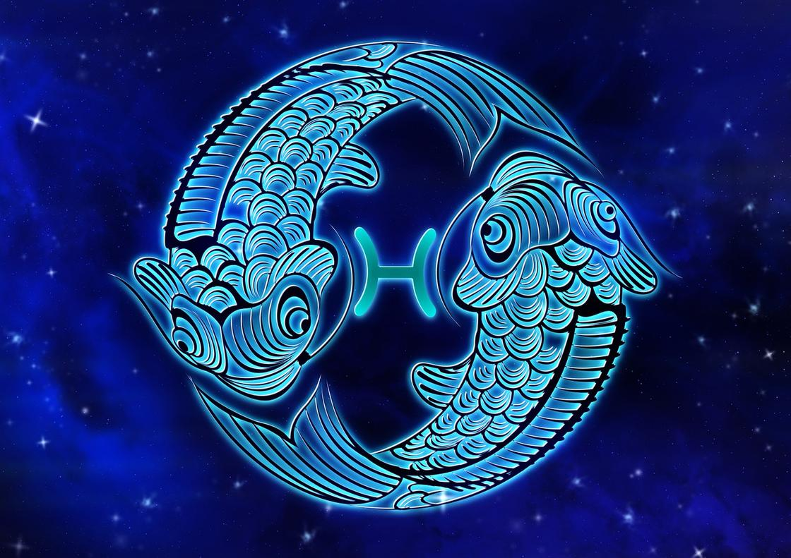

РИБИ
(20 лютого по 20 березня)


Для успіху представникам цього знаку необхідно розібратися в собі та подолати страх та нерішучість.
Риби – творчі особистості. Часто їм буває непросто розібратися в собі, зрозуміти, що їм потрібно у житті, розставити пріоритети й рухатися вперед, досягаючи мети. Нерішучість і страх змін деколи стримують їхні мрійливі пориви вирватися назустріч пригодам, новим емоціям та враженням. Але якщо все ж у них це виходить – Риби йтимуть до переможного кінця. Водночас представники цього знака є надійними друзями – їм можна сміливо довірити навіть найпотаємніші таємниці. Риби ніколи не ставляться з упередженням до людей. І якщо дають пораду – то перевірену на собі особисто.
- Особливості: мудрість, вразливість, чуйність та здатність адаптуватися до будь-яких обставин.
- Символізм: взаємно обернені в різні боки дужки, а також дві риби, що пливуть у різних напрямках, але пов'язані стрічкою.
- Вплив: розвинена інтуїція й уміння пристосовуватися до будь-якого громадського порядку.
- Камені-талісмани: аквамарин, аметист, гагат, перли, місячний камінь, опал.
Для успіху представникам цього знаку необхідно розібратися в собі та подолати страх та нерішучість.